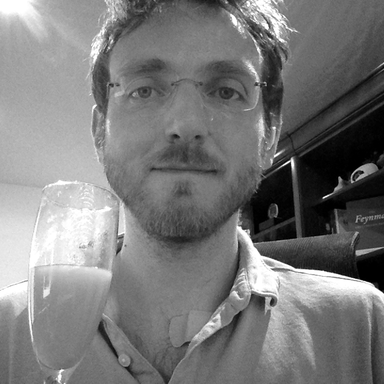
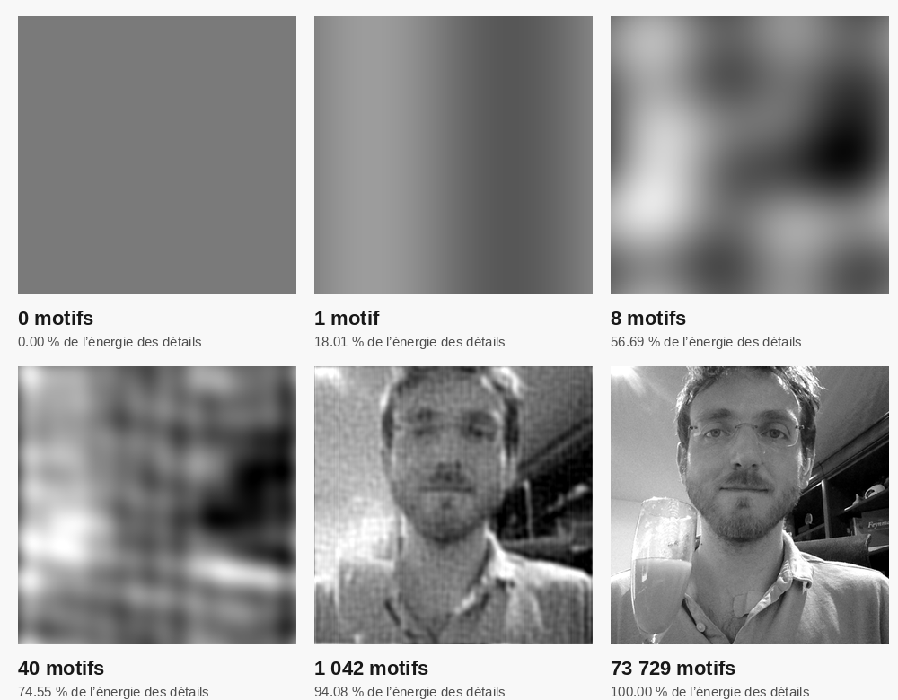

Et si l’on dessinait un visage en additionnant des rayures ?
Cette animation reconstruit une photo de webcam avec des motifs sinusoïdaux. Chaque ajout rapproche une surface grise d’un portrait, jusqu’au dernier pixel.
01À gauche, l’ajout. Le clair augmente la luminosité, le sombre la diminue. Le contraste de ce panneau est amplifié pour rendre les petites contributions visibles.
02À droite, la somme. Les 40 premiers motifs arrivent un par un. La suite avance par groupes : le panneau gauche montre alors plusieurs ondes superposées, d’où son aspect plus brouillé. Chaque onde élémentaire reste une sinusoïde.
384 × 384
pixels dans l’image calculée
73 729
motifs, en plus du gris moyen
205
étapes de calcul affichées
25,15 s
pour la reconstruction animée
LE POINT DE DÉPART
D’une webcam à une idée mathématique.
Au départ, Mika demande à un assistant de prendre une photo avec sa webcam, puis de le dessiner. L’expérience passe par un portrait au trait, avec une contrainte : utiliser le moins de traits possible.
Puis revient le souvenir de Every picture is made of waves, de Sixty Symbols : une image qui se forme en accumulant des motifs rayés. Cette vidéo inspire l’expérience de reconstruction par Fourier présentée ici.
La photo est passée en niveaux de gris, recadrée en carré, puis réduite à 384 × 384 pixels. C’est cette référence que le calcul reconstruit exactement après arrondi en niveaux de gris entiers.

La référence du calcul. Photo de webcam · recadrage en gris
01 / LES MATHÉMATIQUES
Une image peut se lire comme un accord.
Un son peut réunir plusieurs notes. Une image peut réunir plusieurs ondes qui varient dans l’espace.
Un pixel gris est un nombre, ici de 0 à 255. L’image entière est donc un tableau de nombres. La transformée de Fourier discrète (DFT) exprime ce tableau dans une autre base : des oscillations périodiques. La FFT est un algorithme rapide pour calculer cette transformée. Référence : NumPy
La brique élémentaire : une onde rayée
s(x, y) = A cos[2π(ux + vy) / N + φ]
u, v · fréquences
Le nombre de cycles suivant les deux axes. Leur combinaison fixe l’espacement et l’orientation des rayures.
A · amplitude
La force de l’onde : combien elle éclaircit ou assombrit les pixels.
φ · phase
Le décalage du motif : où tombent ses bandes claires et sombres.
Par exemple, u = 4, v = 0 donne quatre cycles de gauche à droite, donc des bandes verticales. Avec u = 0, v = 4, elles deviennent horizontales. Une onde couvre toute l’image : aucune ne représente à elle seule un œil ou une bouche.
u = 4 · v = 2 · A = 90 · φ = 0°
À VOUS D’ESSAYER
Fabriquez une rayure.
Déplacez les curseurs pour isoler le rôle de chaque paramètre. Ce motif est une démonstration indépendante du portrait.
Pour l’affichage, l’onde s’ajoute ici à un gris de valeur 128.
Retrouver le visage par addition
Le calcul trouve l’amplitude et la phase de chaque fréquence à partir de la photo. On conserve d’abord la composante constante, c’est-à-dire sa luminosité moyenne. Puis on ajoute les ondes, des plus énergétiques aux moins énergétiques.
I(x, y) = gris moyen + ∑kmotifk(x, y)
Dans ce calcul, les contributions de fréquences distinctes sont orthogonales : leur produit a une moyenne nulle sur la grille. Leur énergie est additive. Garder les plus énergétiques minimise donc l’erreur quadratique pour un nombre donné de motifs complets de cette décomposition. Cela explique le choix d’ordre utilisé dans la vidéo.
Les grandes variations de lumière apparaissent souvent tôt, puis les détails s’affinent. Le tri se fait cependant par énergie, pas strictement par fréquence. Chaque étape ne fait qu’ajouter les contributions calculées.
Voir la formule de la transformée et le regroupement des coefficients
Pour notre image carrée de côté N, les coefficients normalisés sont calculés avec la convention suivante. Les indices x, y, u, v vont de 0 à N − 1.
L’inverse additionne les exponentielles de signe positif, pondérées par C(u, v). Dans le code NumPy, les tableaux sont indexés par ligne puis colonne : [y, x] et [v, u]. Définition de la DFT 2D
L’image étant réelle, deux coefficients de fréquences opposées sont conjugués. Leur somme donne une onde réelle d’amplitude 2|C| et de phase arg(C). Les fréquences sont considérées modulo N. Symétrie pour une entrée réelle
Avec N = 384, quatre coefficients sont leurs propres conjugués : (0, 0), (192, 0), (0, 192) et (192, 192). On traite le premier comme la moyenne, et les trois autres comme des motifs d’amplitude |C|. Il reste donc (147 456 − 4) / 2 + 3 = 73 729 motifs. Une paire conserve une amplitude et une phase : ce regroupement n’est pas une compression de moitié des données.

Six arrêts sur image. Avec 1 042 motifs, environ 94,08 % de l’énergie des détails est déjà représentée.
02 / L’IMPLÉMENTATION
Des pixels à la vidéo, en Python.
NumPy fait le calcul numérique. Pillow prépare les images et dessine les annotations. FFmpeg encode la vidéo MP4.
Préparer la référence
La photo de 1 280 × 720 pixels est convertie en gris. On en extrait le carré allant de (340, 0) à (1 060, 720), puis on le réduit à 384 × 384 avec un filtre Lanczos. Le tableau de calcul utilise des nombres flottants sur 64 bits.
Calculer et classer les ondes
fft2(image) / N² donne le spectre normalisé. Chaque coefficient est regroupé avec son conjugué. Les groupes sont classés selon leur énergie décroissante. La moyenne, environ 121,61 sur 255, est présente dès le départ.
Reconstruire les étapes
Un spectre partiel reçoit progressivement les coefficients retenus. ifft2(partiel).real * N² produit la somme correspondante. Les huit premières ondes ont quatre étapes d’amplitude ; les suivantes arrivent seules jusqu’au motif 40, puis par groupes de taille croissante.
Afficher et encoder
Le panneau gauche affiche la différence entre deux sommes successives, avec un contraste amplifié. Le panneau droit affiche la reconstruction à son intensité réelle, arrondie et limitée à 0–255 pour l’écran seulement. Les 205 états calculés sont envoyés directement à FFmpeg, qui les encode en H.264 de haute qualité, sans passer par un GIF. Documentation FFmpeg
Le cœur du calculPython / NumPy
# image : tableau carré de niveaux de gris
N = image.shape[0]
spectre = np.fft.fft2(image) / (N * N)
partiel = np.zeros_like(spectre)
partiel[0, 0] = spectre[0, 0] # le gris moyen# groupes_tries contient les indices d’une fréquence# et de son conjugué, par énergie décroissante.
for indices in groupes_tries:
partiel.ravel()[indices] = spectre.ravel()[indices]
somme = np.fft.ifft2(partiel).real * (N * N)
# Conserver une étape pour l’animation.
Extrait de principe. Le script complet inclut le classement, les groupes, le rendu et les vérifications.
✓
Vérifié jusque dans les pixels
L’erreur maximale finale avant arrondi est d’environ 1,71 × 10−13 niveau de gris. Après arrondi, l’image reconstruite est identique à la référence. Le script vérifie aussi la symétrie, la décroissance de l’erreur quadratique et le décodage intégral de la vidéo. Cette égalité exacte concerne le calcul et le PNG ; le MP4 utilise une compression avec pertes, dont l’erreur est mesurée séparément.
Le dossier contient la référence en gris, le script Python et les polices du rendu. Depuis la racine du dossier, avec Python 3.12 ou plus récent et FFmpeg (avec ffprobe) installés :
Les résultats sont écrits dans resultats/. Le script fourni repart de la référence déjà préparée et génère la vidéo affichée ici. L’option --gif produit aussi un GIF. Il faut quelques centaines de mégaoctets de mémoire pour conserver les étapes avant l’encodage.
Passer d’un signal à ses fréquences permet de le comprendre, de le modifier ou de le reconstruire.
01 / IMAGES
Réduire le poids des photos
Le JPEG classique avec pertes transforme des blocs de 8 × 8 pixels avec une transformée en cosinus discrète (DCT). Il quantifie ensuite les coefficients : les moins bien conservés perdent de la précision et certains deviennent nuls, ce qui facilite leur codage. La DCT est apparentée à Fourier, mais ses motifs et ses conditions aux bords diffèrent de notre DFT appliquée à toute l’image.
Un analyseur de spectre utilise une FFT pour révéler les composantes fréquentielles d’un enregistrement. Sur un signal sonore, cela peut montrer une fondamentale, ses harmoniques ou une tonalité parasite. On retrouve l’idée du portrait, avec des variations au cours du temps plutôt que selon deux axes de l’image.
En imagerie par résonance magnétique, l’encodage spatial fournit des mesures liées aux fréquences spatiales, dans l’espace k. Une reconstruction de Fourier permet de retrouver une image à partir de ces mesures. Dans un cas cartésien simple, une transformée inverse constitue une étape centrale du calcul.
Un flou peut se calculer par convolution de l’image avec un noyau. La convolution correspond à une multiplication dans le domaine fréquentiel : FFT de l’image et du noyau, multiplication, puis transformée inverse. Avec un remplissage adapté aux bords, cette méthode peut accélérer les convolutions de grande taille.
Les détails viennent de la photo. Cette reconstruction est entièrement numérique et déterministe. Amplitudes et phases sont calculées à partir de la référence ; aucun modèle génératif n’intervient dans cette animation.
Exact veut dire exact pour cette référence. Le résultat retrouve le carré de 384 × 384 pixels en gris. Le recadrage, la réduction et la conversion ont déjà écarté une partie des informations de la photo couleur initiale.
Les étapes intermédiaires sont des approximations. Des ondulations peuvent apparaître près des contrastes forts. La DFT traite la grille comme périodique : les différences entre les bords opposés participent elles aussi aux fréquences calculées.
Les liens documentaires sont placés au fil des explications. Pour approfondir la variante en cosinus : définition de la DCT dans SciPy. Les images et les mesures présentées ici proviennent du calcul de cette expérience.
{kind=link}